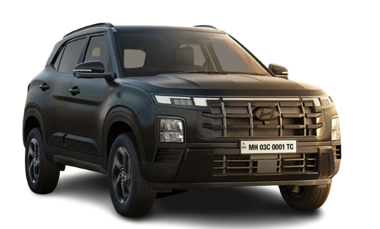

Primary Research
Gathered customer and dealer feedback to understand satisfaction, key purchase drivers, perceived issues, and after-sales experience.
Marketing Management | Market Research
A market research project studying Hyundai Creta's position in India's mid-size SUV segment through customer and dealer insights, competitor benchmarking, PESTEL, Porter's Five Forces, and STP analysis.

Mid-size SUV market share cited
Creta customers in India
Cities in sales and service reach
Annual sales CAGR cited
Research Design
The project combined customer and dealer inputs with external market data to evaluate Creta's competitive position and future roadmap.
Gathered customer and dealer feedback to understand satisfaction, key purchase drivers, perceived issues, and after-sales experience.
Applied PESTEL and Porter's Five Forces to evaluate external pressures across policy, technology, competition, buyers, and substitutes.
Used STP analysis to map Creta's target audience, value proposition, and position as a benchmark feature-rich mid-size SUV.
Market Infographic
Sales continued to rise from 2020 to 2024, but rivals increased pressure through hybrid technology, safety perception, and premium features.
Competitive View
Sporty design, feature-rich appeal, and multiple transmission choices created strong alternative value for buyers.
Better fuel efficiency, strong hybrid positioning, AWD availability, and Maruti's service network strengthened its pitch.
German engineering and safety ratings created pressure on Creta's perceived safety leadership.
Toyota's hybrid powertrain and fuel economy offered a practical counter-position to Creta's feature-led appeal.
Report Table
A cleaner version of the report's competitive scenario table, focused on rival strengths and weaknesses against Creta.
| Competitor Car | Strength over Creta | Weakness over Creta |
|---|---|---|
| Kia Seltos | Sporty design, feature-rich package, and more transmission choices. | Higher maintenance cost and firmer ride quality. |
| Maruti Grand Vitara | Strong hybrid efficiency, AWD availability, and wide service network. | Less premium feature perception and no diesel option. |
| Skoda Kushaq | Strong safety rating and build-quality perception. | No diesel option and weaker pan-India service presence. |
| Volkswagen Taigun | German engineering, strong safety perception, and performance focus. | Fewer variants and limited showroom/service reach. |
| Toyota Urban Cruiser Hyryder | Hybrid powertrain and better fuel economy. | Less feature-rich compared with key rivals in the segment. |
Future Roadmap
Communicate safety improvements more strongly and address buyer concerns that allow safety-led competitors to gain attention.
Optimize petrol engine efficiency and explore hybrid technology to respond to rivals with strong fuel economy positioning.
Strengthen front-end appeal, improve everyday controls, and refine UI convenience for premium and practical customer expectations.
Use better material quality and a more premium cabin finish to protect Creta's aspirational position in the segment.
Contact
Happy to discuss this marketing project, customer research, and data-backed strategy work.